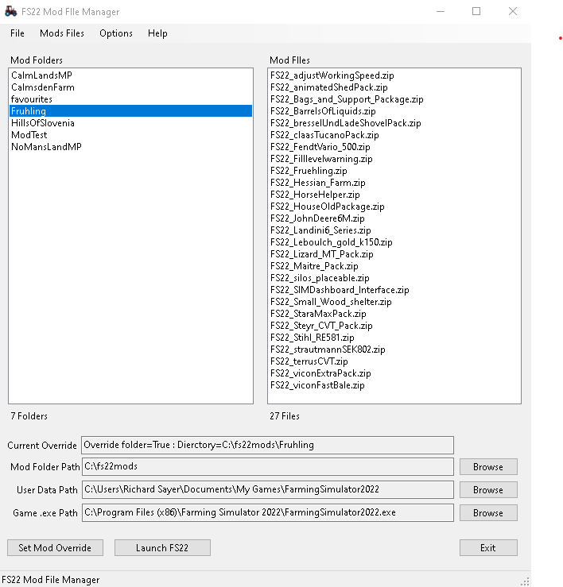

The location of the folder containing the seperate mod folders. These are the items that appear in the "Mod Folders" list. Use the browse button to set this value
This is the location of the game config data. This is usually in your user directory, for example, "C:\Users\your_user_name\Documents\My Games\FarmingSimyulator2022". Use the browse button to set this value
TopCloses the application.
Adds an empty folder to the mod folders path using the file open dialog box.
Removes (deletes) the highlighted folder in the "Mod Folders" list (and all of its contents) from the mod folders path. Right clicking a folder in the list will show the remove context menu
Adds a mod zip file to the "Mods List" using the file open dialog to locate and select the mod file
Removes (deletes) the highlighted mod file in the "Mods List" list (and all of its contents) from the mod folders path. Right clicking a mod file in the list will show the remove context menu
This will launch the "Open FIles" dialog so you can select the file(s) you wish to copy to the selected directory
TopOpens the options file (config.ini) in a text editor. For Windows it will be Notepad.
Checks/Unchecks the menu item. If checked then double clicking a mod folder will set the path in the gameSettings.xml file and lauch FS22
TopOpens this help file in a browser
Displays the application about box
TopFile menuTop
CTRL + X = Exit application
This sets the value of the game setting to True if chekced. If true the game will use the mod folder set in the gameSettings.xml file
When clicked this operation updates the gameSettings.xml file. IT DOES NOT ASK IF YOU WANT TO it just does it, so please be careful. It is recomended that you make a copy of the gameSettings.xml file before using this application so you can role it back if the is an issue.
This button launches the game from the path set in this applications config.ini file.
The default value is GAME_EXE=C:\Program Files (x86)\Farming Simulator 2022\FarmingSimulator2022.exe but if, for example, you isntalled it from Steam you will need to update this path C:\Program Files (x86)\Steam\steamapps\common\Farming Simulator 2022\FarmingSimulator2022.exe before you start the application. You can do this with any text editor such as notepad.
Top